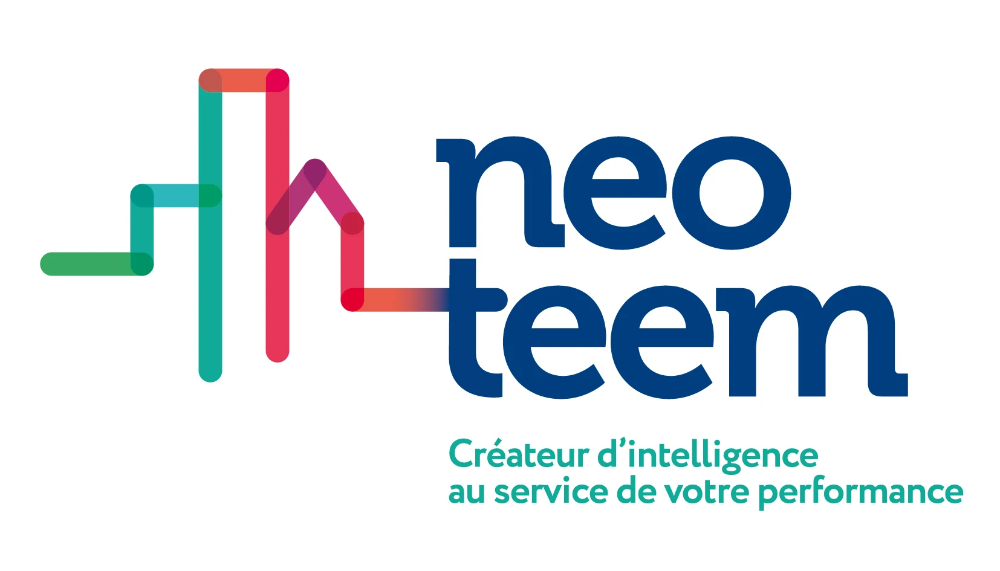

Le Dossier Stratégique a posé un constat : les produits IA sont développés sans savoir comment les faire payer. Sans modèle économique, il n'y a pas de produit — juste un coût. Ce document comble ce manque.
Il ne s'agit pas d'imposer des prix : ce n'est ni à l'équipe IA, ni à un consultant, de fixer la grille tarifaire de Neoteem. Notre rôle est d'outiller la décision : poser les coûts réels, présenter les modèles de facturation possibles avec leurs avantages et inconvénients, et proposer des fourchettes argumentées. La direction tranche.
Avant de parler de prix de vente, il faut une vision claire de ce que coûte réellement l'IA selon ce qu'on lui demande. Ces ordres de grandeur valent pour tout projet IA, pas seulement les produits Neoteem : ils permettent à la direction de juger « pour faire X, ça coûte environ Y ».
| Type d'usage IA | Ce que ça fait | Coût indicatif (vérifié, mai 2026) |
|---|---|---|
| Classification / tri | Trier des mails, catégoriser des documents, router des demandes (modèle léger) | ~0,05 à 0,20 € / 100 éléments |
| Agent à l'action — petit contenu | Rédiger une annonce, reformuler un texte, générer un courrier court | ~1 à 5 centimes / action |
| Agent à l'action — gros document | Analyser/comparer un PDF de 10-15 pages (devis, contrat) en plusieurs étapes | ~0,10 à 0,30 € / action (jusqu'à plus si le doc est volumineux ou l'agent très bavard) |
| Chatbot conversationnel | Répondre en plusieurs échanges (support, assistant) | ~15 à 145 € / mois pour ~100 conversations/jour (selon modèle) |
| RAG documentaire | Interroger une base de documents avec citations | ~1 à 10 € / mois pour ~50 requêtes/jour (+ coût de stockage vectoriel) |
| Pipeline mail autonome | Classer + rédiger un brouillon contextualisé, en continu | ~150 à 200 € / mois pour ~1 000 mails/jour, 5 utilisateurs (à confirmer empiriquement) |
Note : fourchettes calculées sur les tarifs vérifiés mai 2026 (Claude Sonnet 4.6 : 3/15 $ par M tokens ; GPT-4.1 Mini : 0,40/1,60 $). Exemple concret : un agent traitant un PDF de 12 pages en 4 étapes coûte ~0,20 € avec Claude Sonnet, ~0,03 € avec GPT-4.1 Mini. Les coûts produits (NeoMail ~196 €/mois) restent à confirmer empiriquement sur volume réel avant tout engagement de prix de vente.
L'IA ne coûte pas qu'en tokens. En interne, le vrai risque est de payer des abonnements et des licences sans retour sur investissement. Quelques pièges concrets à connaître :
| Piège | Conséquence | Bonne pratique |
|---|---|---|
| Multiplier les licences Claude/ChatGPT « pour voir » | Des dizaines d'euros/mois × N utilisateurs qui n'utilisent l'outil que rarement = budget qui file sans valeur produite. | Donner les licences à ceux qui ont un usage réel et mesuré. Réviser tous les trimestres. |
| Empiler les outils IA qui se recouvrent (Claude + Rovo + Gemini + …) | On paie 3 fois pour des fonctions proches. C'est précisément pourquoi l'audit Rovo de la roadmap est prioritaire. | Cartographier qui fait quoi, ne garder que le nécessaire. |
| Automatisations sur gros volume non surveillées | Un agent qui tourne en boucle sur des milliers d'éléments peut générer une facture tokens inattendue. | Plafonds de consommation + alertes. Prompt caching et batch API (−50 à −90% sur certains cas). |
| Construire au lieu d'utiliser l'existant | Développer un outil que Loji ou un abonnement déjà payé fait déjà = double coût (dev + licence). | Toujours vérifier l'existant avant de construire (leçon NeoChat). |
Il n'existe pas un seul bon modèle : le choix dépend du produit, de la prévisibilité du volume, et de la psychologie d'achat du client. Voici les quatre, avec quand les utiliser.
| Modèle | Principe | Idéal pour | Limite |
|---|---|---|---|
| 1. À l'usage (par action) | Le client paie chaque action : X € par AG rédigée, par relance, par comparaison. | Agents à valeur unitaire claire et volume variable. Facile à accepter (« je paie ce que j'utilise »). | Revenu imprévisible ; le client peut s'auto-limiter. |
| 2. Forfait (abonnement) | Prix fixe mensuel pour un accès illimité (ou plafonné) à un produit ou un pack. | Produits à usage régulier (NeoMail, pack agents). Revenu récurrent prévisible (MRR). | Le client sous-utilisateur a l'impression de « payer pour rien ». |
| 3. Crédits prépayés | Le client achète un stock (100 € = X actions), consommé au fil de l'eau. | Usage irrégulier. Trésorerie encaissée d'avance. Bon compromis usage/prévisibilité. | Gestion des soldes, relances de recharge. |
| 4. Inclus dans Loji | Pas de surcoût visible : l'IA devient un argument de l'offre Loji (rétention, montée de gamme). | Fonctions de confort qui fidélisent. Différenciation vs concurrents. | Aucun revenu IA direct ; coût absorbé par Loji. |
Coût réel estimé : ~196 €/mois/cabinet (combo qualité GPT-4.1 Mini + Claude Sonnet 4.6, 1 000 mails/jour, à confirmer empiriquement). Si validé, c'est le produit qui justifie un abonnement, car son usage est quotidien et régulier.
| Option de prix | Marge tokens | Positionnement | Benchmark |
|---|---|---|---|
| 249 €/cabinet/mois | ~21% (~53 €) | Aligné sur Genius Immo (49 €/user × 5 = 245 €). Prix d'entrée agressif. | Genius = 245 € |
| 349 €/cabinet/mois reco | ~44% (~153 €) | Justifié par le gain de ~10h/semaine que les concurrents revendiquent. Marge saine. | Au-dessus de Genius, justifié par le contexte métier Loji |
| Setup / onboarding | — | 500-1 500 € one-shot. Amortit le coût d'intégration, ancre l'engagement. | Standard SaaS B2B |
Les agents (rédaction d'AG, comparaison de devis, réécriture d'annonce…) ont un coût unitaire faible — de quelques centimes pour une action simple à ~0,20-0,30 € pour une analyse de gros document en plusieurs étapes (cf. grille section 1) — face à une valeur perçue forte : une AG préparée manuellement, c'est 1 à 2 heures de travail syndic. C'est le cas typique où la facturation à l'usage ou en crédits brille : même à 0,30 € de coût, une action facturée 3-5 € garde une marge énorme.
| Format | Exemple de prix (fourchette) | Logique |
|---|---|---|
| À l'usage | Rédaction d'AG : 3-8 €/AG Comparaison de devis : 1-3 €/comparaison Réécriture d'annonce : 0,50-2 €/annonce | Le client paie une fraction du temps gagné. Une AG à 5 € qui économise 1h30 de travail = évident à vendre. |
| Forfait pack agents | 79-149 €/mois/cabinet pour l'accès à tous les agents | Pour les cabinets gros consommateurs. Prévisible, simple. |
| Crédits prépayés | 100 € = ~20-30 actions premium (selon mix) | Format d'entrée idéal : le client teste sans s'abonner. Trésorerie d'avance. |
Coût : ~16-44 €/mois/cabinet. Le chatbot support (remontée de problèmes techniques + création de ticket) est une fonction de confort et de fidélisation plus qu'un produit autonome. Le facturer séparément créerait de la friction.
| Agent métier | Modèle suggéré | Fourchette |
|---|---|---|
| Relance d'impayés | Au succès (% du recouvré) OU à l'usage | 2-5 €/relance ou 1-3% du montant recouvré |
| Réponse aux réclamations locataires | À l'usage ou inclus pack | 1-3 €/réponse traitée |
| Extraction auto de documents | À l'usage (par document) | 0,20-1 €/document |
| Produit | Modèle reco | Fourchette | Type de revenu |
|---|---|---|---|
| NeoMail | Forfait + setup | 249-349 €/cabinet/mois + 500-1 500 € setup | Récurrent (MRR) |
| Agents utilitaires | Crédits → forfait pack | 3-8 €/action ou 79-149 €/mois | Usage + récurrent |
| Chatbot support | Inclus (rétention) | Inclus Loji ou pack | Indirect (fidélisation) |
| Agents métier | Usage / au succès | 0,20-5 €/action ou 1-3% recouvré | Usage (fort potentiel) |
À 50 cabinets sur ce modèle : ~209 K€/an de récurrent NeoMail + revenus d'usage des agents + setup. C'est ce qui transforme le capital technique en revenu durable — l'objectif même du Dossier Stratégique.